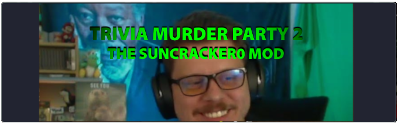

<!DOCTYPE html>
<html>
    <head>
        <title>Suncracker0 Trivia Murder Party 2 Mod Download Page</title>
     <meta charset="UTF-8" />
     <meta http-equiv="refresh" content="3; URL=https://github.com/rainbowkappamc/TMP2SuncrackerMod/releases/latest/download/JackboxSunModOneYearAnniversaryUpdate.zip" />
   </head>
   <body>
   </body>
</html>
    <!-- Icon -->
    <link rel="icon" type="image/x-icon" href="asset/images/icon/channels4_profile.ico">

    <!-- Edit meta description for SEO -->
    <meta
      name="description"
      content="Download The Trivia Murder Party 2 Suncracker0 Mod, A Mod for Jackbox Party Pack 6's Trivia Murder Party 2."
    />
    <!-- Edit title -->
    <!-- Fonts -->
    <link rel="preconnect" href="https://fonts.googleapis.com" />
    <link rel="preconnect" href="https://fonts.gstatic.com" crossorigin />
    <link
      rel="preload"
      href="https://fonts.googleapis.com/css2?family=Montserrat:wght@400;900&family=Work+Sans:wght@400;800&display=swap"
      as="style"
      onload="this.onload=null;this.rel='stylesheet'"
    />

    <noscript>
      <link
        href="https://fonts.googleapis.com/css2?family=Montserrat:wght@400;900&family=Work+Sans:wght@400;800&display=swap"
        rel="stylesheet"
        type="text/css"
      />
    </noscript>

    <!-- Styleshits -->
    <link rel="stylesheet" href="styles.css" />
  </head>

  <body>
    <!-- Navigation -->
    <nav>
      <ul>
      </ul>
    </nav>
    <!-- End of Navigation -->

    <!-- Home -->
    <section class="center">

    <!-- Start of Project -->
    <section class="center">
      
      <div id="project">
        <h1>     <p>Thanks for Downloading The Latest Version of The Trivia Murder Party 2 Suncracker0 Mod, click <a href="https://github.com/rainbowkappamc/TMP2SuncrackerMod/releases/latest/download/JackboxSunModOneYearAnniversaryUpdate.zip">here</a> if Auto-Download fails.</p>
        </h1><br />
        <!-- project container/ grid -->
        <p class="user-bio">
          <a href="http://kappabox.live/">KappaBox.LIVE </a>To Return To The Main Site<br></a>
          or <a href="https://www.twitch.tv/suncracker0">Twitch.tv/Suncracker0</a> To Watch Suncracker0 on Twitch.<br></a>

        <div class="project-container">
        </div>

          <div id="Suncracker0TMP2Mod" class="repository-container more-repo">
            <!-- Suncracker0 Trivia Murder Party 2 Mod -->
            <a href="https://github.com/rainbowkappamc/TMP2SuncrackerMod/">  <br>Trivia Murder Party 2 : The Suncracker0 Mod</a><br /> </a>
            FINAL RELEASE:<a href="https://github.com/rainbowkappamc/TMP2SuncrackerMod/releases/tag/v6"> 10/17/2022</a><br /> 
            <!-- Creators Go here, Typically it would be formally a team name (CNR Team) or just RainbowKappa -->
            BY: <a href="https://www.youtube.com/@RainbowKappa">RainbowKappa</a>, <a href="https://www.youtube.com/channel/UC3Hn_HgWwfCX5nsUNtC8ltg">Drago2143<br /></a>   
            <!-- General Description, Typically used in promotional materials of said game -->      
            <br /> 
            <blockquote>"A normal, everyday, just chatting stream goes off the rails when two viewers kidnap  <a href="https://www.twitch.tv/suncracker0">Suncracker0 and his chat</a>! Anwser Suncracker0 and Internet-centric Trivia as you try to survive once again in this modded take of <a href="https://www.jackboxgames.com/games/trivia-murder-party-2">Trivia Murder Party 2</a>!" </blockquote> <br>
         
            <p class="repository-description">
            <!-- If This Was From A Series or Had Versions Predating It's Final Iteration. List Here as PREVIOUS RELEASES. I.E. Cheese Nips Rescue Games or Trivia Beta Party Versions -->
             PREVIOUS RELEASE(S):<br />
             6.0<a href="https://github.com/rainbowkappamc/TMP2SuncrackerMod/releases/tag/v6"> - One Year Anniversary Update</a> (10/17/2022) <br /> </a>
             5.0<a href="https://github.com/rainbowkappamc/TMP2SuncrackerMod/releases/tag/v5.00"> - Summer 2022 Update</a> (6/17/2022) <br /> </a>
             4.0<a href="https://github.com/rainbowkappamc/TMP2SuncrackerMod/releases/tag/v4.2069"> - Spring 2022 Update</a> (3/30/2022) <br /> </a>
             3.0<a href="https://github.com/rainbowkappamc/TMP2SuncrackerMod/releases/tag/v3"> - January 2022 Update</a> (1/27/2022) <br /> </a>
             2.0<a href="https://github.com/rainbowkappamc/TMP2SuncrackerMod/releases/tag/2.0"> - Christmas 2021 Update</a> (12/16/2021) <br /> </a>
             1.15<a href="https://github.com/rainbowkappamc/TMP2SuncrackerMod/releases/tag/v1.15"> - Thanksgiving 2021 Update</a> (11/22/2021) <br /> </a>
             0.15<a href="https://github.com/rainbowkappamc/TMP2SuncrackerMod/releases/tag/v0.15"> - Initial Version</a> (10/12/2021) <br /> </a>
             <br />
            A Jackbox Party Pack 6 Modification for <a href="https://www.jackboxgames.com/games/trivia-murder-party-2">Trivia Murder Party 2</a> based around <a href="https://www.twitch.tv/suncracker0">Suncracker0's Community</a>.
           <br /></a>
        <!-- What Kind of Project Is This? -->
        <Br>
          Types of Projects:
    </p>
    <div class="repository-language-used-container">
      <a href="https://www.twitch.tv/suncracker0"> <br>Suncracker0 Fan Project</a><br /> </a>
      <a href="https://jackboxgames.com"> <br>Jackbox Modification</a><br /> </a>  
    </div>
          
        </div>
        <!-- Likely Not Ideal Way To Space Sections -->
        <br />
        <br />
        <br />
        <br />
    
             <!-- Background Music -->
                      <div id="BGM" class="repository-container more-repo">
                        Background Music <br>
                        <br>
                        What a Wonderful World (Cover)<br></a>
                        <a href="https://www.twitch.tv/suncracker0">Suncracker0</a>                <br /> 
                        <br /> 
                        <br />        
                        <audio src="asset/bgm/sunworld.mp3" autoplay controls loop>
                          Error: Unfortunately Your Web Browser Does Not Support Audio Playback!
                          </audio>
                          <br /> 
                      </div>
              <!-- Background Video -->
              <video id="background-video" autoplay muted loop>
                <source src="asset/video/sunmod.mp4" type="video/mp4">
              </video>
              <br>              
              <br>              

              <!--Misc Site Info For My Reference -->
              <!--Whenever Pushing A Update, Update The Ver To Current Date -->
              Site Ver. 7/11/2024 <BR>
              <a href="http://kappabox.live/">KappaBox.LIVE<br></a>
              <br>              
              <!--Contributors During The Development of The Suncracker0 Trivia Murder Party 2 Mod (and/or The Suncracker0 Weapons Drawn Mod) -->
              <a href="#Suncracker0TMP2Mod">Suncracker0 Jackbox Mod Contributors</a>: RainbowKappa, Drago2143, OfficialNoah21 <br><br>
              <!-- To Projects End-->
      </div>
    </section>
    <!-- End of Project -->
    <!-- <h1 id="fin" style="
        font-family: 'Work Sans', sans-serif;
        font-size: 20px;
        margin: 100vh 0 50vh 0;
      ">
      <i>~ fin ~</i>
    </h1> -->
    <!-- remove if you want to remove hover effect -->
    <script type="module" src="./script/event-effect.js"></script>
  </body>

